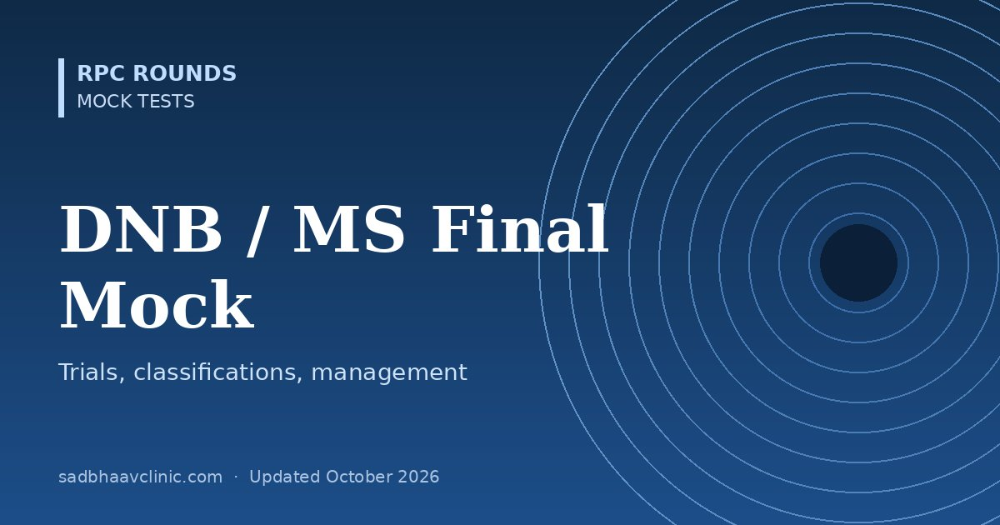

DNB and MS Ophthalmology Mock Test: 50 MCQs and 10 Theory Questions
Last updated: October 2026
A 50-question revision mock for final-year MS and DNB ophthalmology residents. Indian final examinations are mainly theory and clinical, but MCQs are the fastest way to find gaps in landmark trials, classifications and management decisions before you write long answers.
- Format: four options, single best answer, 50 minutes.
- Focus: applied PG-level questions on landmark trials (EMGT, OHTS, ONTT, Protocol T, ETROP, COMS, EVS), classifications and management decisions across every subspecialty.
- Below the test: ten common theory questions with the key points examiners look for.
Ten theory questions to practise
Write each answer in 15–20 minutes, then check it against the key points.
- Describe the classification, clinical features and management of acute primary angle closure.
Key points: ISGEO classification (PACS, PAC, PACG); symptoms and signs; immediate medical treatment; laser iridotomy in both eyes; when to consider lens extraction (EAGLE trial); plateau iris and failure of iridotomy. - Discuss the management of centre-involved diabetic macular oedema.
Key points: OCT definition; systemic control; anti-VEGF agents and Protocol T; treat-and-extend; steroid implants for pseudophakic or non-responders; role of focal laser today; follow-up and cost. - Classify retinopathy of prematurity (ICROP3) and outline screening and treatment in India.
Key points: Zones, stages, plus and pre-plus, A-ROP; Indian screening criteria (birth weight ≤2000 g or gestation ≤34 weeks; first exam by day 20–30); Type 1 vs Type 2 ROP; laser vs anti-VEGF (RAINBOW, BEAT-ROP); follow-up after anti-VEGF. - Describe the causes, investigation and management of post-operative endophthalmitis.
Key points: Acute vs chronic; organisms; vitreous tap and intravitreal vancomycin 1 mg and ceftazidime 2.25 mg; EVS indications for vitrectomy; prevention with povidone-iodine and intracameral antibiotics. - Discuss the evaluation of a patient with optic disc swelling.
Key points: Unilateral vs bilateral; papilloedema vs optic neuritis vs NAION vs pseudopapilloedema (disc drusen); visual function; urgent imaging; lumbar puncture; IIH management (IIHTT). - Write a note on corneal collagen cross-linking.
Key points: Mechanism; indications and progression criteria; Dresden protocol and 400 µm rule; accelerated and epithelium-on variants; complications; evidence for halting progression. - Discuss the management of a dropped nucleus during phacoemulsification.
Key points: Recognising capsule rupture; stop and stabilise; anterior vitrectomy; IOL options (sulcus, optic capture, AC IOL, scleral fixation); timing of pars plana vitrectomy; prevention and risk factors. - Describe the work-up of a patient with granulomatous uveitis in India.
Key points: Anatomical classification (SUN); tuberculosis (Mantoux, IGRA, chest imaging), sarcoidosis (ACE, chest CT), syphilis serology, VKH; when to start anti-tubercular therapy; steroid-sparing agents. - Classify amblyopia and outline its management.
Key points: Strabismic, anisometropic, deprivation and meridional types; refractive correction first; patching and atropine (PEDIG evidence); binocular and digital treatments; compliance and recurrence. - Write a note on the National Programme for Control of Blindness and Visual Impairment (NPCBVI).
Key points: Revised blindness definition (2017); targets; cataract surgical rate; school eye screening; diabetic retinopathy and ROP initiatives; eye banking and keratoplasty; human resources.
Revision help: Clinic Desk Reference, landmark trials, classifications and Learning Dashboard.


Preparing for AIOS-OKAT?
OKAT Decoded is a three-volume question bank by Dr Dhaval Patel: 10,200 original MCQs, each with an explanation, a reason why every other option is wrong, and a pearl, plus 18 full-length mock tests.
More free mocks: all mock tests.
📘 Want more exam-ready material? See Most Commons in Ophthalmology on Kindle, or browse all my books.
Looking for an eye specialist in Ahmedabad? Learn about our Eye Department or book a consultation with Dr. Dhaval Patel.